| obo_trial | sess_date | decade | speech | trial_wordcount | deft_wordcount | gender | age | offcat | vercat | verdict_type |
|---|---|---|---|---|---|---|---|---|---|---|
| t17850406-74 | 1785-04-06 | 1780 | none | NA | NA | female | NA | theft | guilty | foundGuilty |
| t18180909-279 | 1818-09-09 | 1810 | speaks | 82 | 7 | male | 60 | theft | guilty | foundGuilty |
| t18210912-203 | 1821-09-12 | 1820 | speaks | 137 | 15 | female | 47 | theft | guilty | foundGuilty |
| t18230219-113 | 1823-02-19 | 1820 | speaks | 670 | 125 | male | 51 | theft | guilty | foundGuilty |
| t18250113-8 | 1825-01-13 | 1820 | speaks | 162 | 25 | male | 15 | theft | guilty | foundGuilty |
| t18540403-473 | 1854-04-03 | 1850 | speaks | 219 | 57 | male | NA | theft | guilty | foundGuilty |
| t18590131-255 | 1859-01-31 | 1850 | speaks | 885 | 134 | male | 25 | miscellaneous | guilty | foundGuilty |
| t18620616-661 | 1862-06-16 | 1860 | none | NA | NA | male | 44 | theft | guilty | pleadedGuilty |
| t18690816-723 | 1869-08-16 | 1860 | silent | 21 | 0 | male | 20 | violentTheft | guilty | foundGuilty |
| t18750201-157 | 1875-02-01 | 1870 | none | NA | NA | male | 22 | theft | guilty | pleadedGuilty |
Old Bailey Voices: gender, speech and outcomes in the Old Bailey
OBO
OBV
crime
womens history
Introduction
The Old Bailey Voices data is the result of work I’ve done for the Voices of Authority research theme for the Digital Panopticon project. The research theme is exploring reported speech in the Old Bailey Proceedings and the experience of the trial from the late 18th to the late 19th century.
The most personal piece of evidence we have about the women and men who are the subject of the Digital Panopticon is their words, as recorded in the Old Bailey Proceedings. But, what was lost in translation in the space between the spoken and the printed account? And how did the defendant experience the trial process?
This includes 3D modelling of the courtroom and reconstruction of trials, as well as linguistic analysis of the speech corpus. I’ve been focusing on the relationship between defendants’ spoken words and their trials and outcomes.
Last year I gave an initial conference paper. This will be the first of a few blog posts in which I start to dig deeper into the data. First I’ll review the general trends in trials, verdicts and speech, and then I’ll look a bit more closely at defendants’ gender.
The data
The Old Bailey Voices dataset (OBV) brings together the Old Bailey Online (OBO) Proceedings data and the Old Bailey Corpus (OBC). (The data is explained in more detail in the downloadable documentation and on Github.
I’ve already blogged a bit at this blog about the Proceedings data. The Old Bailey Corpus, created by Magnus Huber, enhanced a large sample of the OBO data (407 sessions, c. 14 million spoken words) between 1720 and 1913 for linguistic analysis, including tagging of direct speech and tagging about speakers.
OBV re-combines the OBC’s linguistic tagging with OBO’s structured trials tagging (including verdicts and sentences). In OBC, individual speakers’ unique OBO identifies are not linked to their tagged utterances, and we needed this information for defendants to make it possible to do a number of things:
- identify which defendants spoke in court and, just as important, which did not
- what kind of utterances defendants made (did they ask questions and answer questions? did they make defence statements?)
- how much they spoke (both word counts and utterance counts)
- how they interacted with other speakers
We can then try to correlate these pieces of information with other known data for the defendant: gender, age, occupation, offence, verdict, sentence; and, eventually, with the life archives data from Digital Panopticon which includes their actual punishments and later life courses.
OBV consists of single-defendant trials for the period 1780-1880, amounting to c.21000 trials in 227 Old Bailey court sessions; c.15850 of the trials contain first-person speech tagged by the OBC. Trials with multiple defendants have been excluded from the dataset because of the added complexity of matching speaker to utterances (and they aren’t always individually named, so it can actually be impossible to do this).
Trials have also been simplified: if there are multiple offences, verdicts or sentences only the most “serious” is retained.
So I’d emphasise that this isn’t a full picture of OBO; there are also aspects of the sampling methodology used by the OBC that are potentially problematic (though I think not in a major way) for my analysis, but I haven’t investigated these properly yet. As a result, this work is quite provisional and likely to be subject to future revisions. And as you’ll see, at this stage I seem to be generating more questions than answers…
Overview
This and following posts use the data from 1781-1880 (decades = eg 1781-90); I omit a handful of ‘special’/miscellaneous verdicts and any unknown/indeterminate gender defendants. This gives a total of 20711 trials.
A random slice of the data (selected variables):
Looking at trials by decade intriguingly suggests three distinct phases. Overall numbers rose dramatically in the early 19th century, peaked in the 1830s-40s and then dropped even more rapidly in the 1850s to return to levels similar to the first three decades. This is unlikely to have very much at all to do with actual levels of crime. (The 1850s drop is very easy to explain: legislation in 1855 channelled a high proportion of relatively minor thefts to lower courts.)
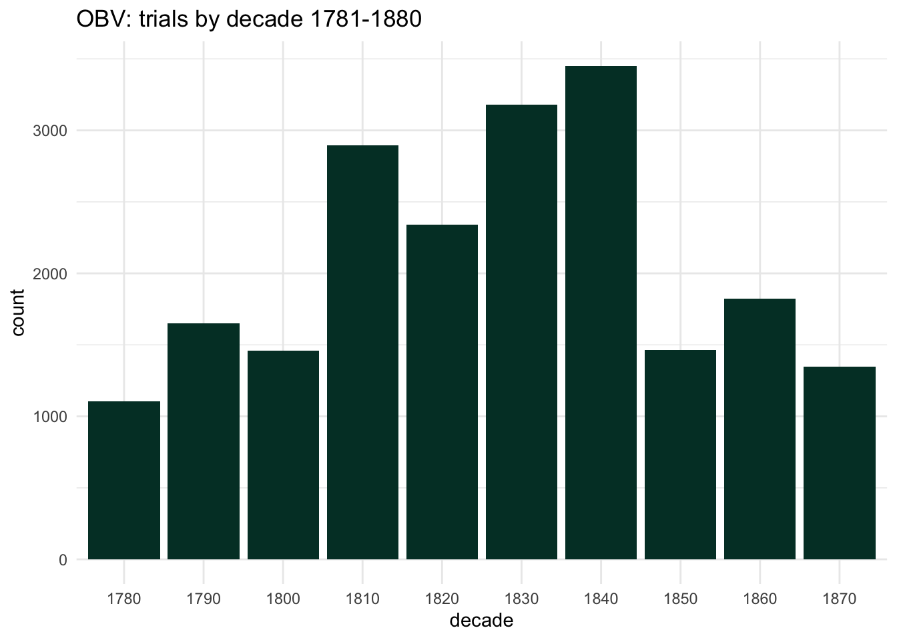
Verdicts
It’s important to note from the start that conviction was by far the most likely outcome for any defendant. Overall, 78.1% of all defendants were convicted.
But conviction rates fluctuated considerably over the decades; at their lowest during the 1780s at 66.1% and peaking during the 1840s at 83%:
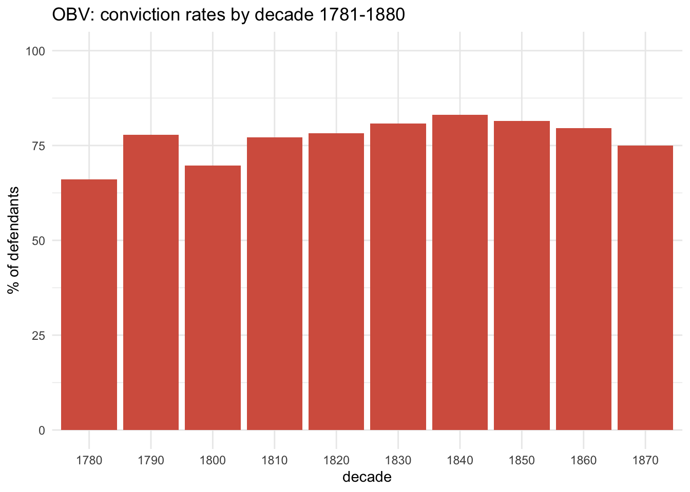
The spike in the 1790s is a bit misleading; for two years reporting of acquittals was suppressed, so conviction rates are somewhat over-stated in that decade. Without archival research, we can’t know exactly how much impact this had, but we can get a pretty good idea. First, compare with adjacent years:
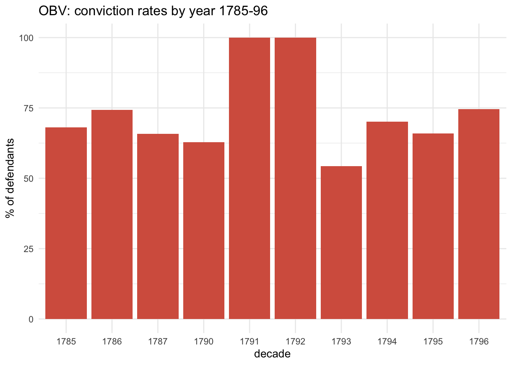
It’s pretty obvious which years were censored! And simply excluding these two years makes their impact on the 1790s’ conviction rate very clear:
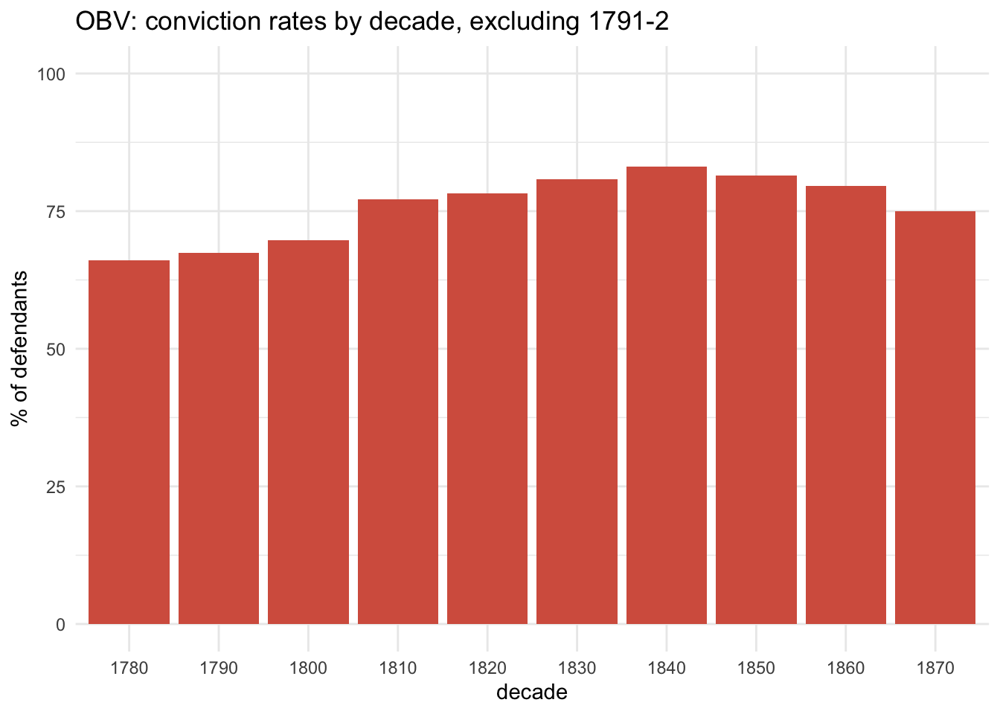
(In the rest of this post I’ll exclude 1791-92 where it seems more appropriate.)
Convictions
However, simply looking at conviction rates hides an important distinction. There were actually two types of conviction: defendants could be found guilty by a jury, or they could plead guilty. In fact, the growth of guilty pleas during the 19th century may well be the single most significant trend in the verdicts data.
Defendants very rarely pleaded guilty in felony trials during the 17th and 18th centuries (sometimes they wanted to and were actually discouraged from doing so by judges): very often their lives were at stake, and the trial itself was their only certain opportunity to present to a judge mitigating circumstances and character references which would be considered in post-conviction pardoning decisions. But the end of the Bloody Code in the 1820s lowered the stakes in the majority of trials, while the growing use of imprisonment from the late 18th century gave judges much more fine-grained sentencing options. Guilty pleas and plea bargaining rapidly - very rapidly! - became much more significant.
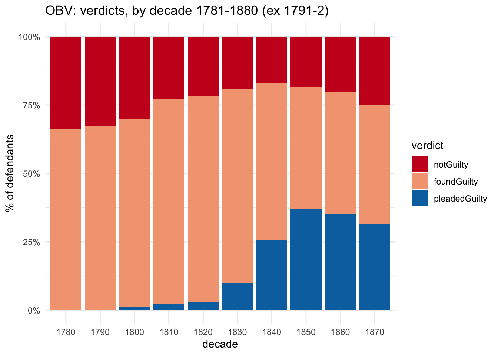
If we look only at defendants who pleaded not guilty (ie, they were tried by a jury), the overall conviction rate was 74.5%. In the 1780s, the conviction rate was 66.1%, rising to peak at 78.7% in the 1830s and then dropping to 63.5% in the 1870s.
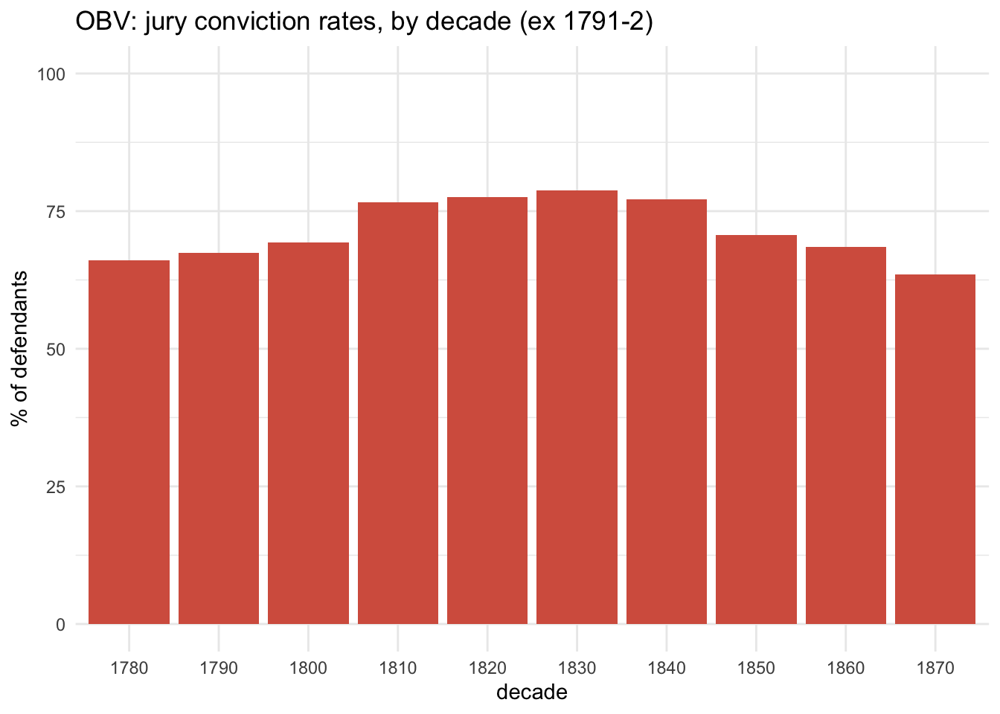
How might we explain this rise and fall in juries’ tendency to convict defendants? One thing to note is that the rise of plea bargaining was very likely to filter out more hopeless cases, so defendants tried by juries in the 1850s-70s may actually have been more innocent, on average, than those tried in the 1780s-1820s. But there are other factors at work that don’t have much to do with actual guilt or innocence.
The first is the pressure of court business and speed of trials. For jury trials only, the four decades with the highest trial counts had the highest conviction rates (by a considerable margin); and the six decades with the lowest trial counts had the lowest conviction rates. The difference is very clear:
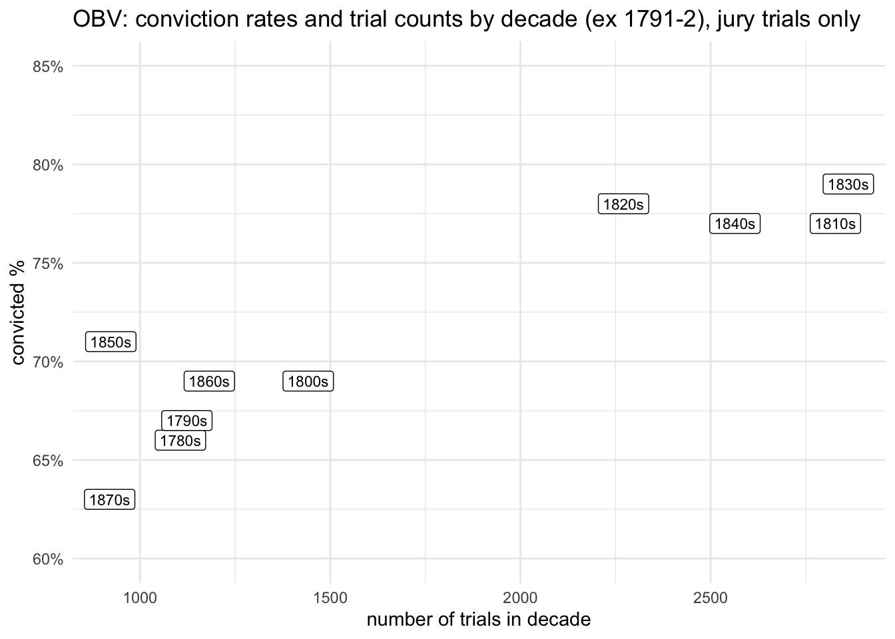
And what that looks like when guilty pleas are included:
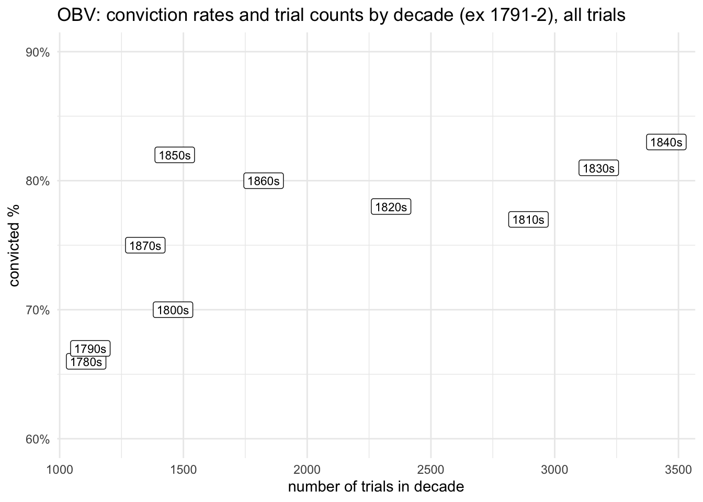
Looking at the whole picture highlights (again) that in many respects making comparisons of outcomes in jury trials over the whole of the century can be misleading: the transformations in punishments and development of guilty pleading, major changes in trials brought by the growing significance of both defence lawyers and professional police officers, and the transfer of much of the court’s business to lower courts in the 1850s, all mean that being tried at the Old Bailey was a completely different experience (for both defendants and jurors) in 1781 and in 1880.
All of which makes the correlation between juries’ tendency to convict and the number of trials dealt with all the more noteworthy. At the same time, it’s not entirely surprising, given the nature of trials during the period. Juries heard numerous trials in a sessions (rather than modern practice of one jury per trial), and
[in the 18th century] trials were very short, averaging perhaps half an hour per case… With the abolition of the death penalty for many crimes in the 1820s, trials became even shorter: in 1833 one commentator calculated that the average trial took only eight and a half minutes.
Speech
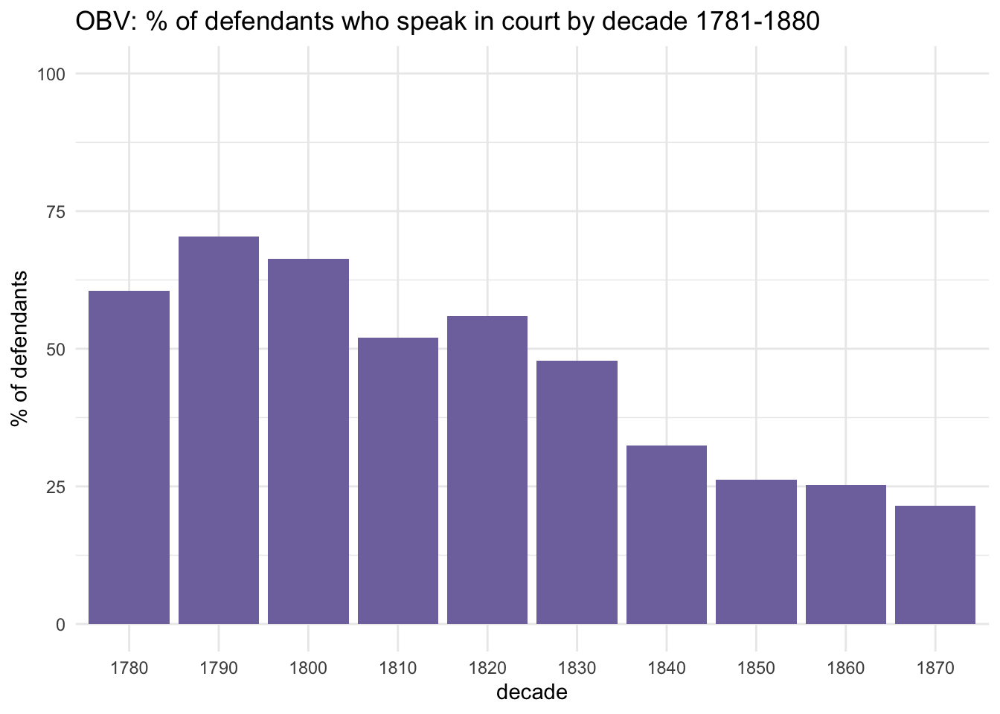
But, as with verdicts, the picture is a bit more complicated than a simple “defendant speaks”/“defendant silent” choice. In terms of defendant speech, there are three types of trial:
- trials in which there is reported speech by the defendant (labelled “speaks” below)
- trials in which there is reported speech by other participants, but the defendant is (apparently) silent (“silent”)
- trials in which there is no reported speech at all (“none”)
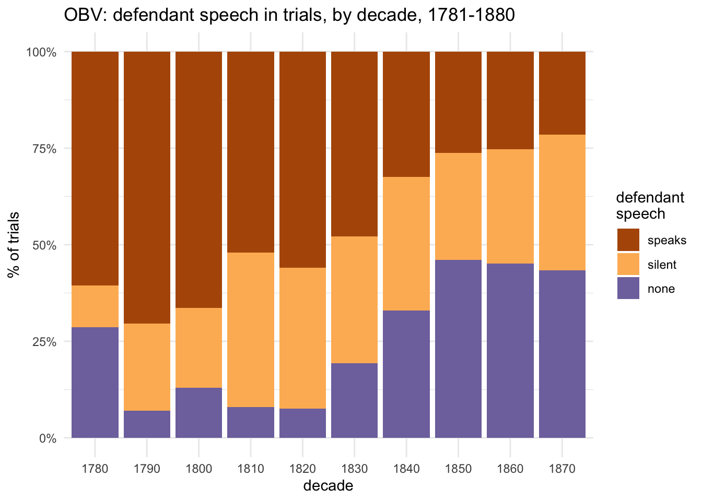
This repeats my earlier findings about changes in patterns of speech between the 1780s and 1870s: overall, there was a massive decline in defendants’ speaking in trials, and this encompassed two distinct trends: more trials in which there was speech but the defendant was silent and more trials without any reported speech at all (which I’ll call “no-speech trials” for conciseness, but emphasise that it means no reported speech; the Proceedings never, even at their most detailed, published all speech). And also there are instances of trials in which the defendant spoke but their words were not directly reported; I haven’t (yet) found a way to work out how often this happened.
There are three main causes of no-speech trials:
- The defendant pleaded guilty, so there was no trial as such; the largest category in this data (
61%of no-speech trials) - Trials which didn’t proceed because the prosecutor or key witnesses failed to turn up, and so the defendant was acquitted for lack of evidence (these became less common as prosecution by police became more the norm)
- Trial reports consisting of summaries rather than reporting evidence directly
The three are not evenly spread chronologically. Directly reporting the speech of trial participants rather than summarising evidence was a fairly gradual development in the Proceedings from the 1730s onwards, and was not quite complete by the 1780s when the role of the publication shifted to a semi-official, government-subsidised record.
But at the same time there was a lot of anxiety about publishing details of evidence in trials that ended in acquittal (in case criminals used the information to learn more effective defence strategies!). This is why reporting of acquittals was suppressed in the early 1790s. I think that summary-report trials in the 1780s also skewed towards acquittals, but this needs more detailed investigation.
At any rate, until the 1820s, the majority of no-speech trials were acquittals, since (as already noted) guilty pleas were rare. In fact, it’s clear once again that even though there was a trend even before that, the 1830s represented a significant turning point:
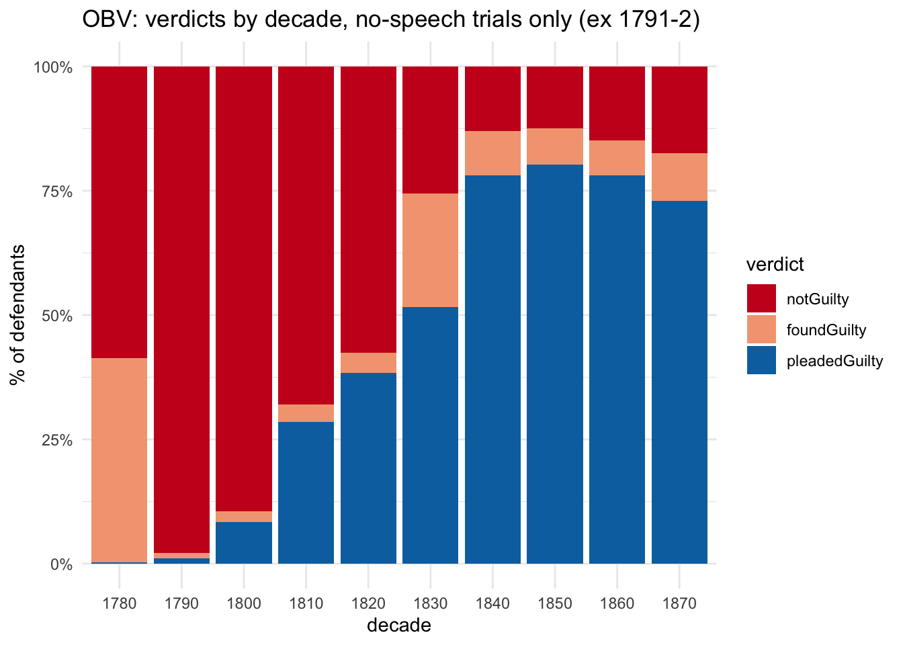
Repeating the comparison of jury conviction rates and trial numbers, but with the added variable of whether the defendant speaks or not, gets interesting (filtering out trials without reported speech):
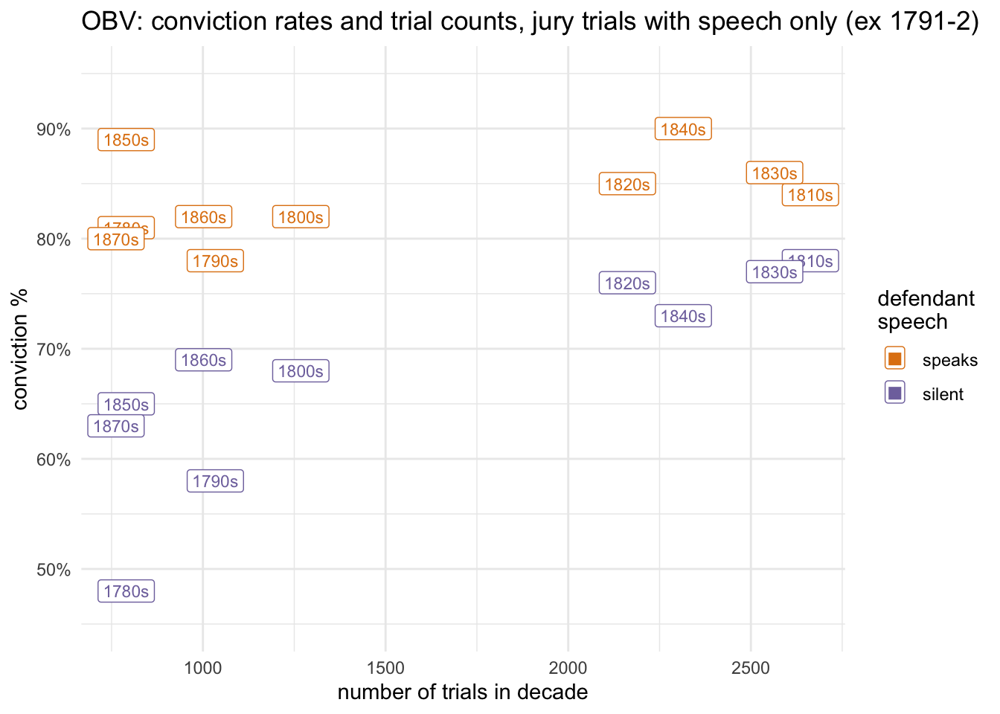
Again, we can see how speaking is associated with higher conviction rates; speaking really wasn’t good for defendants. Interestingly, though, the gap seems to be narrower in the decades with the largest numbers of trials.
Gender
It’s time to bring gender into the picture, and to anyone familiar with historical or contemporary crime statistics it won’t come as much of a surprise that female defendants were very much in the minority.
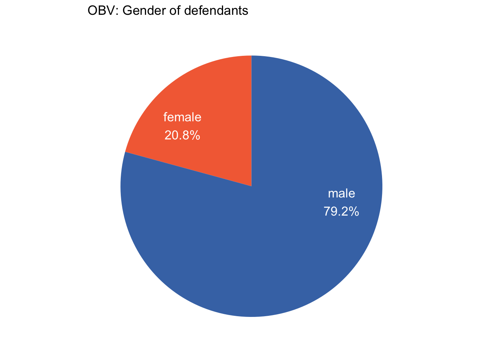
What may be more unexpected though is just how much the proportion of female defendants decreased over the course of the century:
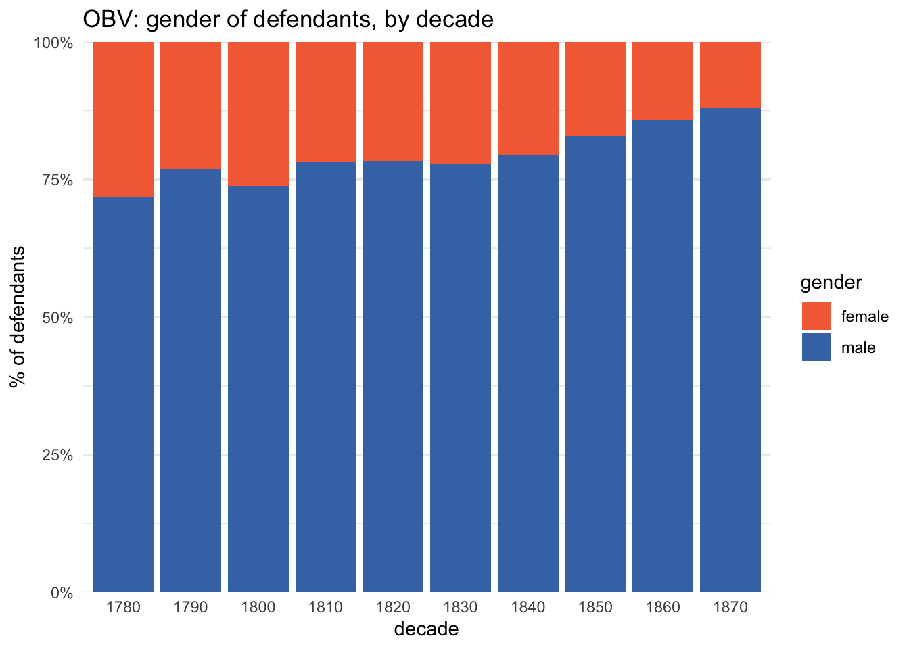
In fact the percentage of female defendants fell from 28.1% in the 1780s to 12.1% in the 1870s.
Gender and verdicts
Looking at outcomes by gender, overall male defendants were more likely than female to be convicted (79.0% to 74.9%). But again, we’ll see how this is complicated by the different verdict categories.
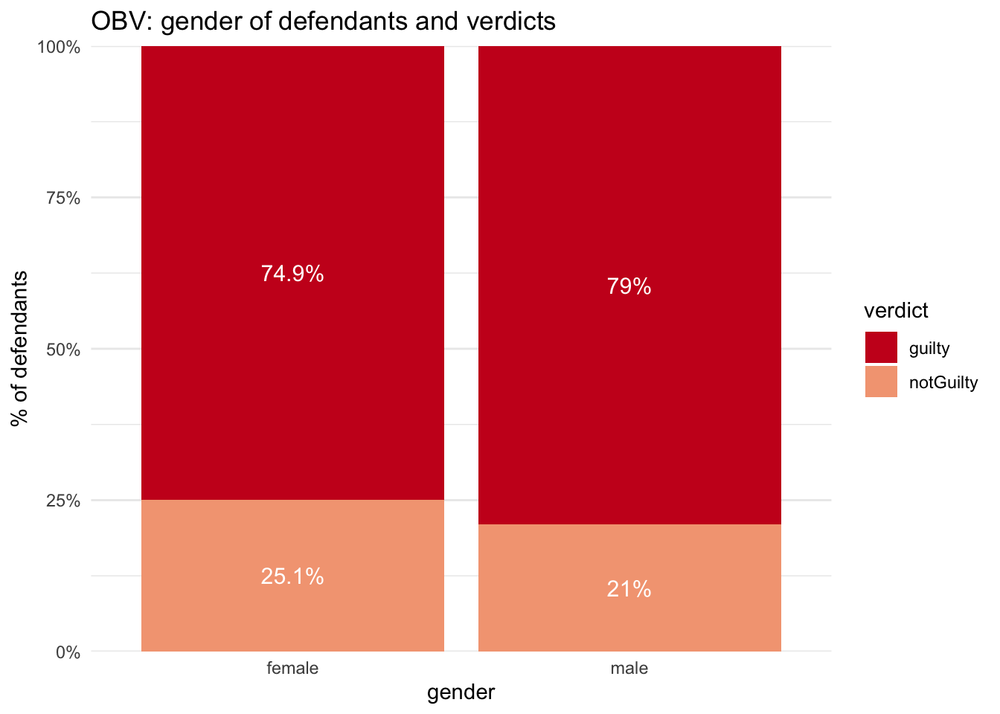
There are also some variations by decade.
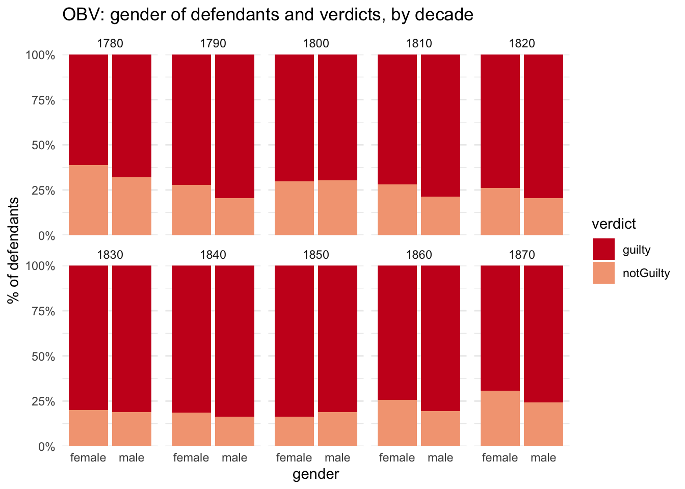
In most decades, men are clearly more likely to be convicted than women. That makes the two decades in which the opposite occurred (the 1800s and 1850s) rather intriguing. While the 1800s may be an isolated anomaly, the three decades from the 1830s to the 1850s look like more of a pattern; what could be happening there?
Gender and speech
Were women defendants as likely to speak as men and are there any gendered differences in outcomes? And does that change over time?
The first notable thing is that women defendants do seem to be more likely to speak than men. But if you look closely, the proportions of men and women who remain silent in trials containing speech are very similar.
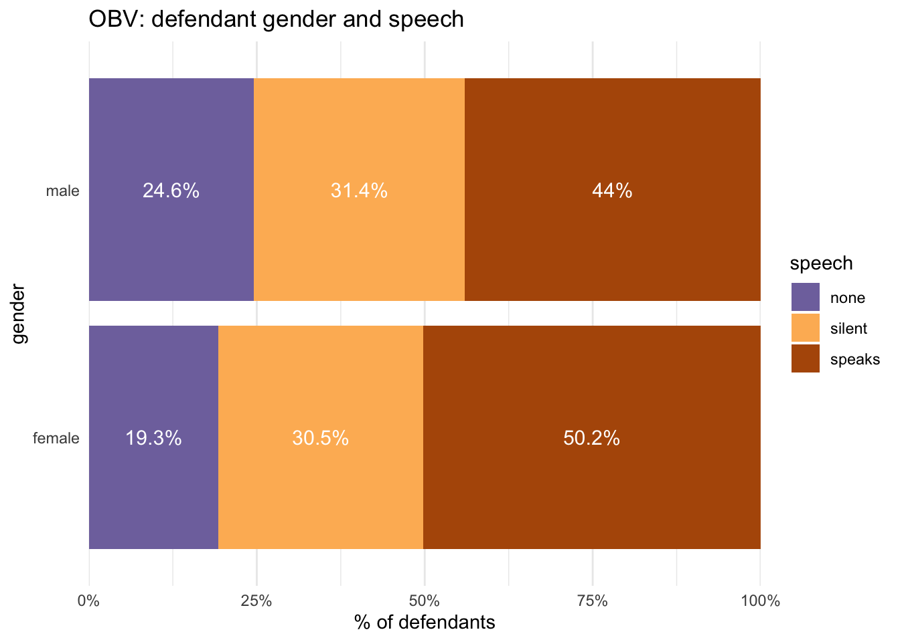
Bearing in mind the different types of trials, this can be teased out into two distinct strands:
- men’s trials are more likely to be no-speech trials;
- female defendants are more likely to speak than males in trials containing speech.
Gender, speech and verdicts
By this point, hopefully you shouldn’t be at all amazed to learn that male defendants pleaded guilty considerably more frequently than women did:
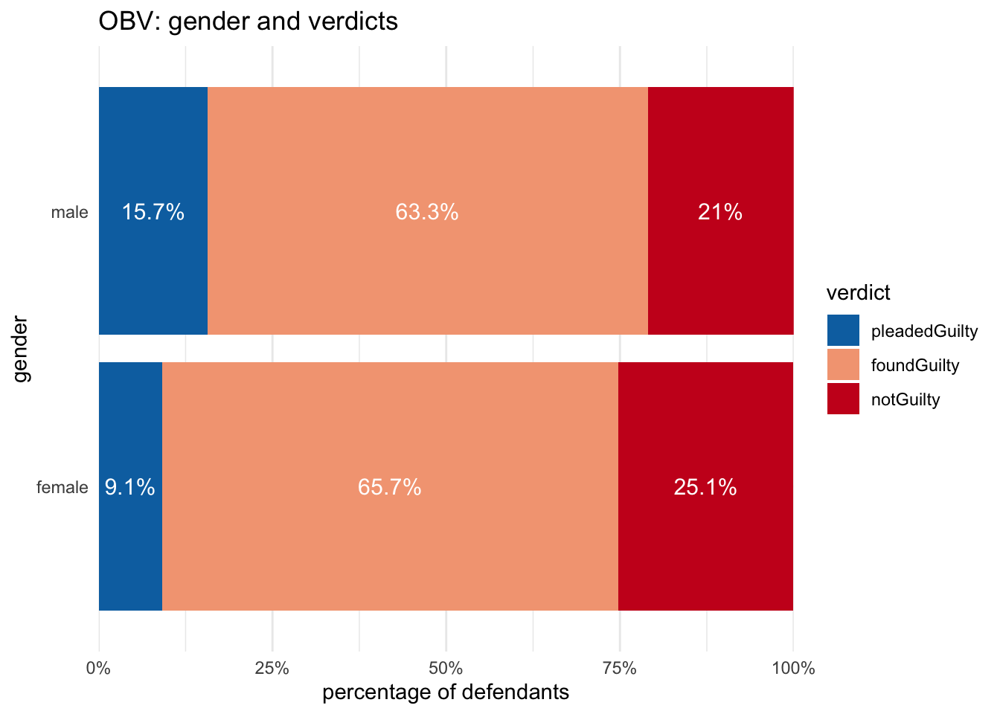
I can speculate on a number of possible reasons for this pattern, but answers may need different data which will be considered in future posts. For example:
- men might be more likely to be caught red-handed (and therefore plead guilty); this or similar questions could be explored using linguistic analysis of the OBV speech data.
- men were more likely to be repeat offenders and more familiar with (and known to) the criminal justice process, making them more likely to plea bargain; this could be investigated using the Digital Panopticon life archives, or references to previous trials in the reports.
In the graph above, it also appears that men were also somewhat more likely to be found guilty than women; this can be seen more easily by looking only at jury trials.
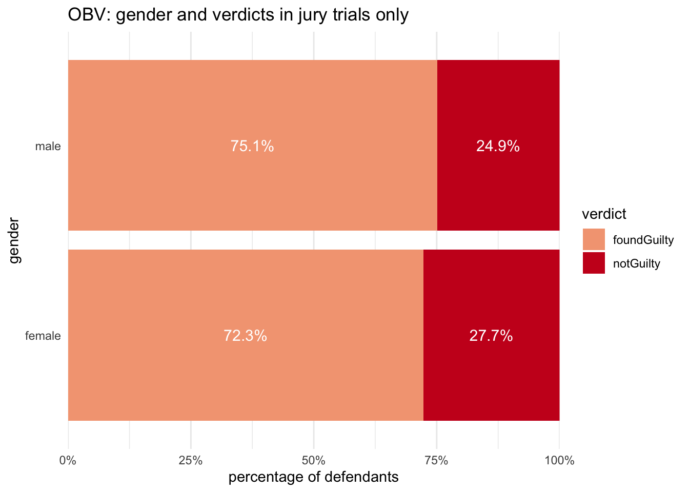
The jury verdicts can be broken down further to consider the effects of speech:
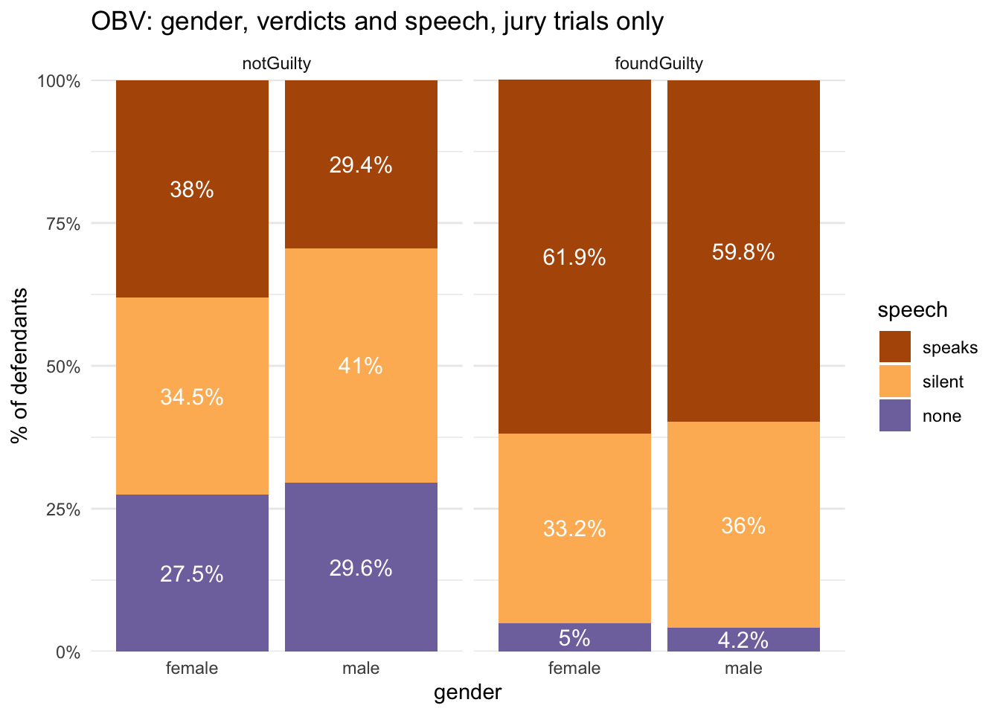
It’s already been shown that the percentages of men and women who stayed silent in trials with speech were quite similar (31.4 to 30.5); the bigger gendered differences were found in the two other speech categories (defendant speaks and no-speech). Here, it can also be seen that the proportions of speech categories were very similar for men and women when juries convicted; but in acquittals, men were quite a lot more likely to have kept silent than women.
I’ll finish by looking again at the gender/decade/verdict breakdown for jury trials only:
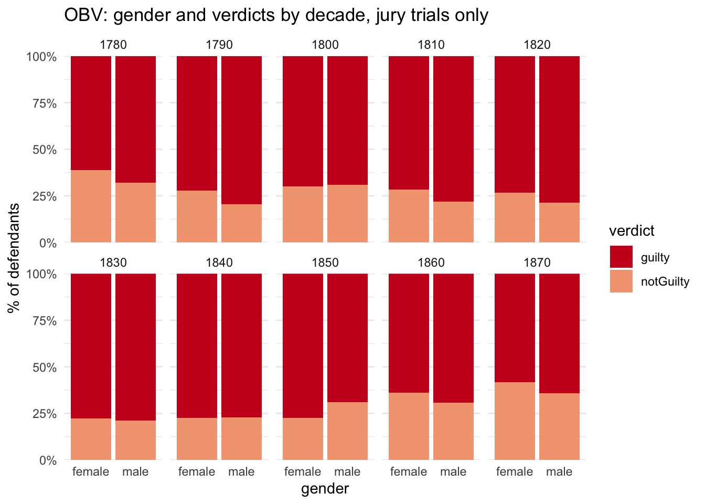
This looks very similar to the previous breakdown (as would be expected of the top row, when there were few guilty pleas, in any case). But the reversal of the usual female-male conviction rate in the 1850s is even more striking. Let’s zoom in:
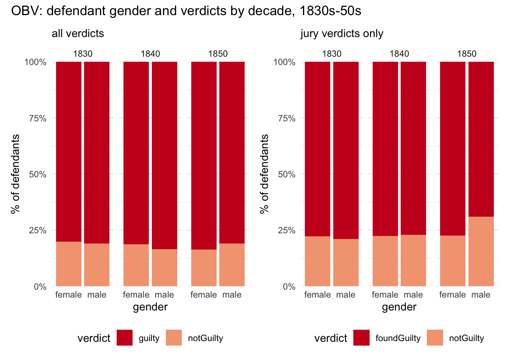
Juries in the 1850s were much harsher on women compared to men than in any other decade, and already slightly more so in the 1840s. Something else for the list of questions!
Concluding thoughts and what’s next
There are some obvious questions to be addressed>
- Why was speaking bad for defendants?
- And why was it seemingly even worse for male defendants compared to women?
An obvious topic for further exploration is the nature of the offences men and women committed. The analysis so far already suggests some interesting relationships between the variables of gender, trial/defendant speech and verdicts; types of offence will be an important factor. (Though, even if there are differences, causation is likely to be hard to discern.)
But it’s already quite a complex picture, and adding even more variables makes it very difficult to analyse or measure the significance of gender compared to other factors. So, in the next post I’m going to start experimenting with some statistical methods and visualisations which are specifically designed for complex categorical data, but are less familiar to most historians than the kind of analysis and bar charts I’ve been using so far. Then I’ll take a closer look at offences. In subsequent posts, I’ll (yes, finally!) start to explore and analyse the words spoken in trials.
Resources
Old Bailey Voices demonstration with trial reconstructions and more (work in progress)